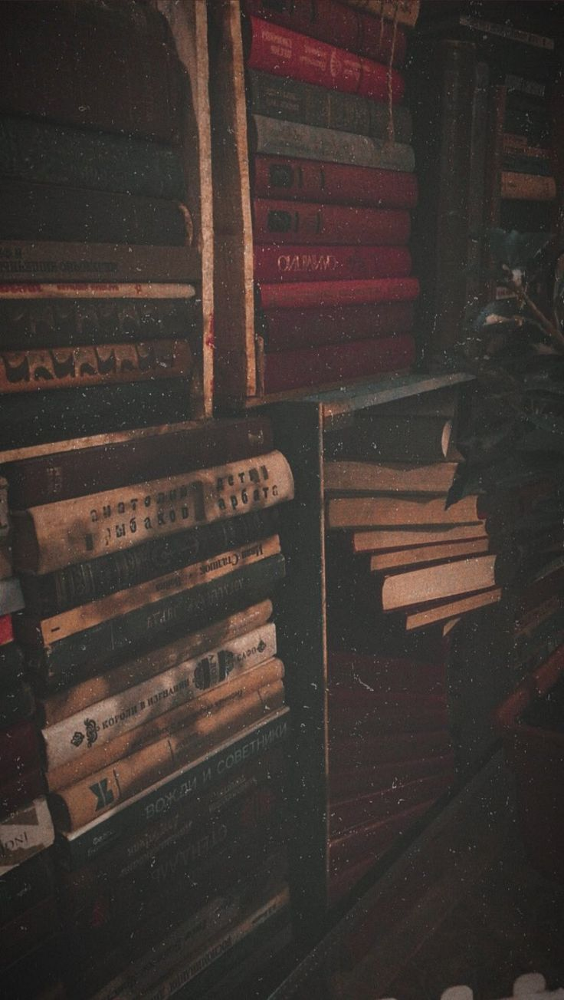

Us raat ke baad Fahad ke dil ka bojh pehle se halka ho gaya tha.
Usne us ehsaas se ladna chhod diya tha...
Aur use Allah ke hawale kar diya tha.
Din guzarte rahe.
Ek din...
Do din...
Phir hafte...
Aur dekhte hi dekhte ek mahina guzar gaya.
Zindagi apni raftaar se chal rahi thi.
Subah office...
Shaam ghar...
Waqt par namaz...
Aur phir wahi rozmarra ki zindagi.
Sab kuch theek tha.
Lekin...
Kuch tha jo theek hokar bhi theek nahi tha.
Us raat ko guzre ek mahina ho chuka tha...
Jis raat Tahajjud ke sajde mein uske honton ne pehli baar kisi ka naam Allah ke saamne lana chaha tha.
Usne us raat bhi ek hi dua maangi thi...
Aur uske baad aane wali har namaz ke baad bhi.
Magar usne kabhi ye dua nahi ki...
"Ya Allah... Aamina meri ho jaaye."
Uski dua kuch aur thi.
"Ya Allah... agar mere dil mein jo ehsaas hai, woh mere liye behtar hai to use paak rakh."
"Aur agar ismein meri duniya ya aakhirat ka koi nuqsaan hai... to mere dil ko isse azaad kar de."
Mohabbat maangne se pehle...
Woh Allah se apne dil ki islaah maangta tha.
Aur shayad isi liye...
Har dua ke baad uska dil pehle se thoda halka ho jaata tha.
"Assalamu Alaikum."
Aamina ne cabin mein dakhil hote hi hamesha ki tarah dheemi awaaz mein salaam kiya aur apni seat par jaakar baith gayi. Waqt ki paband woh ladki aaj bhi roz ki tarah bilkul waqt par pahunchi thi.
"Wa Alaikum Assalam."
Fahad ne gardan utha kar uski taraf dekha, phir nazrein dobara monitor par tika di.
Roz ki tarah do hi lafz the...
Lekin na jaane kyun aaj un do lafzon ka asar pehle se kuch zyada der tak uske saath raha.
Cabin mein kuch der tak sirf keyboard ki awaazein sunayi deti rahi.
Har koi apne system ke saamne baitha hua tha.
"Fahad bhai..."
Furqan ne peeche se awaaz lagayi.
"Lagta hai aaj system phir slow hai."
"Haan... mujhe bhi wahi lag raha hai."
Fahad ne portal refresh karte hue jawab diya.
Ek do baar aur koshish karne ke baad usne poori team ki taraf dekha.
"Koi bhi file upload mat karna."
"Error aa jayega."
"Theek hai bhai."
Zoya ne hamesha ki tarah bade khush-mizaaj andaaz mein jawab diya aur kursi par aaraam se baith gayi.
System waise bhi kaam nahi kar raha tha.
Isliye sab apni purani reports aur offline files dekhne lage.
Thodi der baad...
"Ye check kariye na..."
Aamina ne apni screen ki taraf ishara karte hue kaha.
"Excel mein error aa raha hai."
Fahad kursi se utha aur uski desk ke paas aa gaya.
Usne screen par sirf ek nazar daali.
"Isme duplicate codes hain."
"Unhe hata do."
Aamina kuch pal screen ko dekhti rahi.
Phir usne dobara poocha,
"Duplicate remove karne ka shortcut kya hai?"
"Alt... A... M."
Fahad ne bina soche foran jawab diya.
"Theek hai."
Aamina ne sir hilaaya aur dobara apne kaam mein lag gayi.
Baat wahi khatam ho gayi.
Lekin Fahad wapas apni kursi par baithte hue khud hi sochne laga.
Pehle bhi woh usse kaam poochti thi.
Pehle bhi woh jawab deta tha.
Aaj phir wahi hua tha.
Phir aaj aisa kya alag tha...
Jo uske dil ne is chhoti si guftagu ko bhi sambhal kar rakh liya?
Waqt aahista-aahista guzar raha tha.
System band tha.
Kaam bhi zyada nahi tha.
Kabhi Furqan aur Zoya kisi report ko lekar ek doosre se halki si behas kar lete...
Kabhi sales floor se koi aakar Fahad se do chaar baatein kar jaata.
Office apni raftaar se chal raha tha.
"Ek baat poochun?"
Aamina ki awaaz dobara sunayi di.
"Haan."
"Aap ChatGPT mein kya dekhte rehte ho?"
Fahad ne uski taraf dekha.
Ye sawaal woh pehle bhi usse pooch chuki thi.
Magar aaj...
Na jaane kyun uske is sawaal mein bhi usse ek alag si apnayat mehsoos hui.
"Kuch khaas nahi."
"Bas purani history dekh raha tha."
"Ki hum paida bhi nahi hue the tab hamare mulk mein kya kya hua karta tha."
Usne bilkul saada lehje mein jawab diya.
Aamina ki aankhen halki si muskurayin.
Naqaab ke peeche chehra chhupa hua tha...
Lekin muskurahat aankhon tak aa gayi thi.
"Achha..."
"To aap free time mein ye sab padhte ho?"
"Haan."
Fahad ne halki si saans lekar kaha.
"Zyada tar."

✦ Deendar Mizaj ✦
Aamina ne bas "Achha..." kaha aur dobara apni screen ki taraf dekhne lagi.
Guftagu wahin khatam ho gayi.
Magar ajeeb baat ye thi...
Fahad ko us baat ko aage badhane ki zarurat mehsoos nahi hui.
Aur na hi khatam hone ka afsos.
Usse bas itna achha laga...
Ke aaj un dono ke darmiyan kaam ke alawa bhi do chaar jumle adla-badli hue.
Cabin mein phir se wahi keyboard ki awaazein gunjne lagi.
Kabhi koi report check kar raha tha...
Kabhi koi purani mail dekh raha tha.
System ab bhi down tha, isliye kisi ko bhi kaam ki jaldi nahi thi.
Isi tarah baaton aur chhote-mote kaamon ke darmiyan waqt aahista-aahista guzarta raha.
Deewar par lagi ghadi ne jab dhai bajne ka ishara diya, to roz ki tarah sab apne break ke liye uth khade hue.
Namaz...
Phir khana...
Aur theek teen baje cabin dobara waise hi abaad ho chuka tha.
Fir kuch der baad...
"Waise aap phir history hi dekh rahe ho?"
Aamina ne monitor ki taraf dekhte hue poocha.
Fahad ne monitor uski taraf ghuma diya.
"Ye dekho."
Screen par India ke mukhtalif dauron ka ek mukhtasar sa khaka khula hua tha.
"Prachin daur..."
"Badshahon ka daur..."
"Angrezon ka daur..."
"Phir azaadi..."
Aamina kuch lamhe screen ko dekhti rahi.
"Itna sab yaad rehta hai aapko?"
"Yaad nahi rehta."
Fahad ne kursi ki pusht se tek lagate hue kaha.
"Dilchaspi ho na... to aadhi cheezen khud hi yaad reh jaati hain."
"Aur aapko ismein dilchaspi kab se hai?"
Aamina ne nazrein fahad ki taraf karte hue kaha
"Bachpan se."
Fahad ne screen ki taraf dekhte hue kaha.
"Jab bhi kisi purani jagah ya kisi badshah ka naam sunta tha na..."
"To dil karta tha uske baare mein aur padhun."
Aamina ne dobara screen ki taraf dekha.
"To ye sab aap yaad karte ho?"
"Nahi."
Fahad halka sa hans diya.
"Main yaad nahi karta."
"Bas kahani ki tarah padh leta hoon."
"Jaise?"
Aamina ne foran poocha.
"Jaise..."
"Pehle yahan mukhtalif hukoomatein aayin..."
"Phir Angrez aaye..."
"Phir logon ne qurbaniyan di..."
"Phir hume azaadi mili."
"Bas..."
"Mere liye history itni si kahani hai."
Aamina ne chand lamhe uski taraf dekha.
"Achha..."
"Is tarah to waqai yaad reh jaati hogi."
"Haan."
Fahad ne sir hila diya.
"Kitabon ki tarah padho to mushkil lagti hai..."
"Kahani ki tarah padho to sab yaad reh jaata hai."
Naqaab ke peeche Aamina ke honton par shayad muskurahat aayi thi...
Lekin Fahad ko sirf uski aankhen nazar aayin.
Aur aajkal...
Na jaane kyun...
Uski aankhen hi uski baaton se zyada kuch kehne lagi thi.
Us din ki woh guftagu wahin khatam ho gayi...
Magar uske baad jaane kya badla.
Kabhi kisi purani kitaab ka zikr chhed jaata...
Kabhi kisi shehar ka...
Kabhi kisi khane ka...
Aur kabhi kisi aisi baat ka...
Jiska kaam se door-door tak koi taalluq nahi hota tha.
Guftagu chhoti hi hoti thi...
Magar ab uske liye kisi wajah ki zarurat nahi padti thi.
Ek hafta aur guzar gaya.
Office wahi tha.
Log wahi the.
Rozmarra ki zindagi bhi wahi thi.
Badla tha to sirf ek dil...
Jo ab har roz...
Beikhtiyaar uski awaaz ka muntazir rehta tha.
Mohabbat...
Shayad isi tarah khamoshi se insaan ke andar apni jagah bana leti hai.
Us ehsaas ko apne dil mein liye...
Fahad ne poora hafta waise hi guzaar diya.
Na usne Aamina se kuch kaha...
Na kabhi kehne ki koshish ki.
Magar us raat...
Pata nahi kyun...
Dil ne pehli baar chaha...
Ke ye raaz kisi apne se baant diya jaaye.
Raat ke kareeb saadhe dus baj rahe the.
Office se ghar laut kar Fahad ko abhi kuch hi der hui thi. Kapde badal kar woh kamre mein baitha hi tha ki mobile ki ghanti baj uthi.
Screen par naam chamka.
Qasim Calling...
Fahad ne phone uthaya.
"Haan bol..."
"Abe ghar pahucha ki nahi?"
Qasim ki awaaz hamesha ki tarah josh se bhari hui thi.